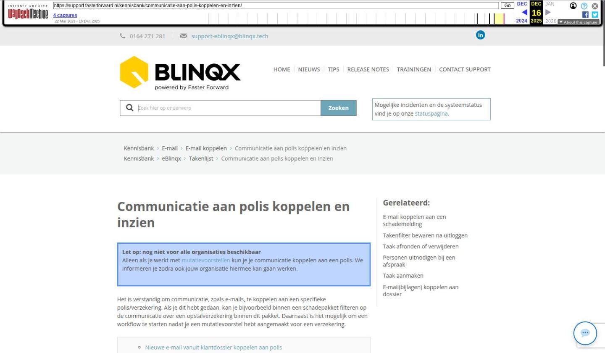

Communicatie aan polis koppelen en inzien

Tekstinhoud
Communicatie aan polis koppelen en inzien
[Let op: dit artikel staat zowel onder Basis > Takenlijst als onder de categorie E-mail > E-mail koppelen (buiten de scope van dit deelarchief).]
Let op: nog niet voor alle organisaties beschikbaar
Alleen als je werkt met mutatievoorstellen kun je je communicatie koppelen aan een polis. We informeren je zodra ook jouw organisatie hiermee kan gaan werken.
Het is verstandig om communicatie, zoals e-mails, te koppelen aan een specifieke polis/verzekering. Als je dit hebt gedaan, kan je bijvoorbeeld binnen een schadepakket filteren op de communicatie over een opstalverzekering binnen dit pakket. Daarnaast is het mogelijk om een workflow te starten nadat je een mutatievoorstel hebt aangemaakt voor een verzekering.
Nieuwe e-mail vanuit klantdossier koppelen aan polis
Registratie of brief koppelen aan polis
Taak koppelen aan polis
Verstuurde e-mail koppelen aan polis
E-mails over polis bekijken met filter
Filteren op registraties, brieven, formulieren en taken
Polisinformatie ophalen met tags
Nieuwe e-mail vanuit klantdossier koppelen aan polis
Het is verstandig om alle klantcommunicatie vanuit het bijbehorende klantdossier op te starten. Wanneer je vanuit een klantdossier een e-mail opstelt, kun je deze aan linkerkant gelijk koppelen aan de bijbehorende polis.
Registratie of brief koppelen aan polis
Bij het aanmaken van een registratie, brief of taak is het ook verstandig om deze direct te koppelen aan de bijbehorende polis (indien van toepassing). Dit doe je op dezelfde wijze als bij een e-mail.
Taak koppelen aan polis
Zodra je een taak aanmaakt, selecteer je aan de linkerkant eerst het product. Hierna worden de onderliggende polissen zichtbaar. Selecteer vervolgens de bijbehorende polis.
Verstuurde e-mail koppelen aan polis
Een verstuurde e-mail koppel je ook eenvoudig aan de bijbehorende polis. In de e-mail klik je op het paraplu-icoon
Er opent dan een pop-up waar je de e-mail aan de polis kunt koppelen.
Als een e-mail nog in je algemene e-mailbox staat en nog niet gekoppeld is aan een klantdossier, moet je de e-mail eerst koppelen aan een klantdossier en het product. Vervolgens kan je via het paraplu-icoon de e-mail koppelen aan de polis.
E-mails over polis bekijken met filter
Als je de e-mails over een specifieke polis wilt bekijken, ga je naar een verzekeringspakket en klik je vervolgens op het tabblad 'Communicatie'.
Hier kies je vervolgens bij de filter 'Polis' voor de gewenste polis waarvoor je de e-mails wilt bekijken.
Filteren op registraties, brieven, formulieren en taken
In het klantdossier is het ook mogelijk om te filteren op registraties, brieven, formulieren en taken over een bepaalde polis. Dit werkt vrijwel hetzelfde als het filteren binnen e-mails.
Ga hiervoor naar het gewenste tabblad en filter op de polis.
Polisinformatie ophalen met tags
Als je gaat communiceren over een polis, bijvoorbeeld in een e-mail of brief, dan kun je eBlinqx informatie laten ophalen uit de bijbehorende polis. Hiervoor gebruik je tags die beginnen met [offertedeel->…] of [offerte->offertedeel->…]
In onderstaand voorbeeld zijn de volgende tag gebruikt:
"[offertedeel->polisnummer] – [offertedeel->product->naam]" (Branche: [offertedeel->product->categorie]).
Laatste update: 15 oktober 2025
Was deze informatie nuttig?
Ja Nee